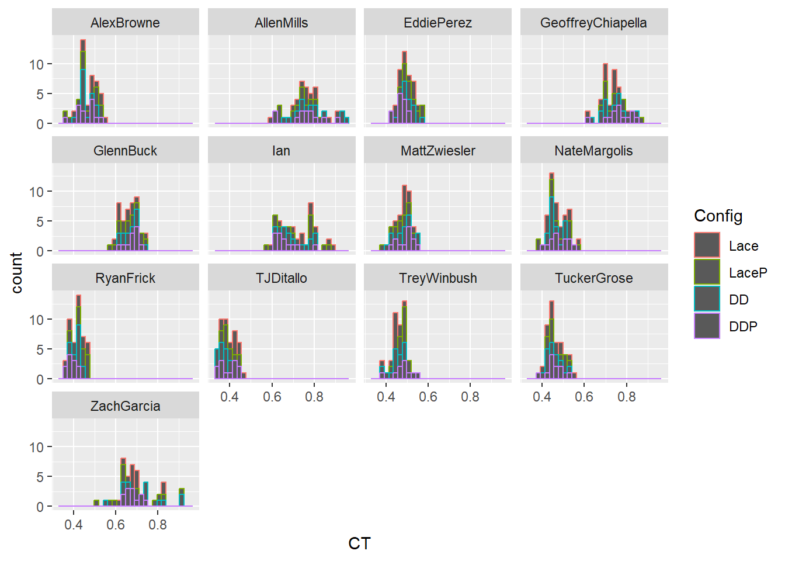
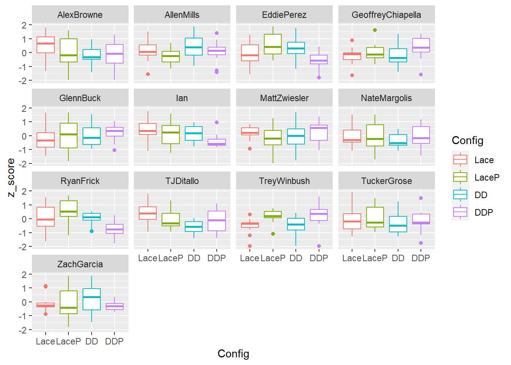
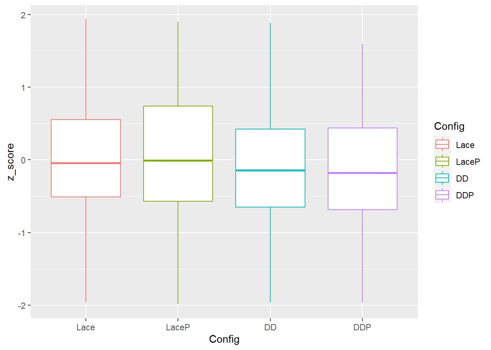
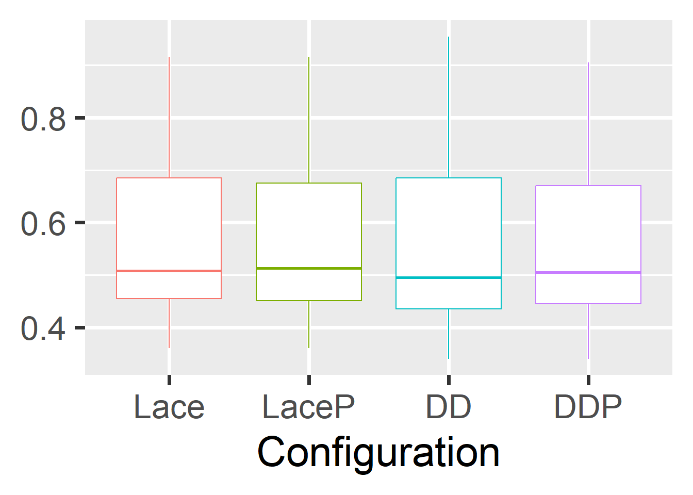
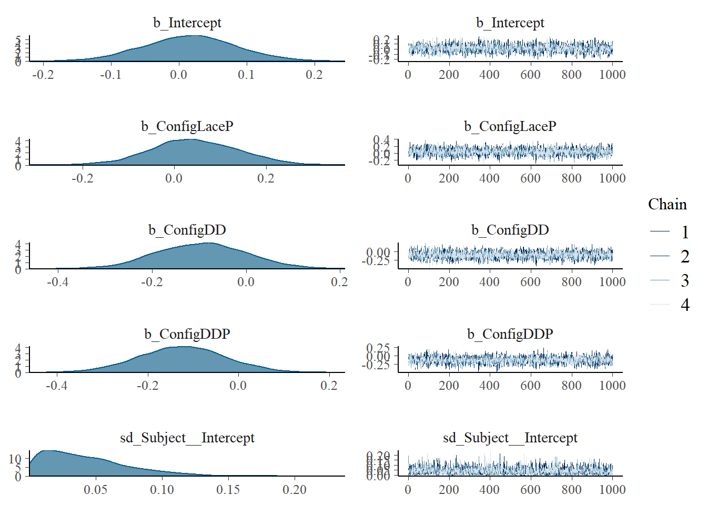
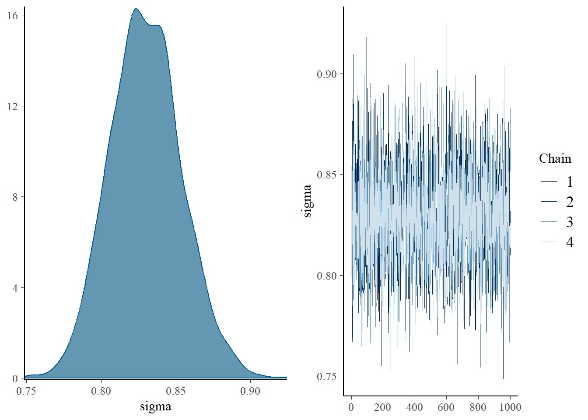

library(tidyverse)Warning: package 'tidyverse' was built under R version 4.2.3Warning: package 'ggplot2' was built under R version 4.2.3Warning: package 'tibble' was built under R version 4.2.3Warning: package 'readr' was built under R version 4.2.3Warning: package 'dplyr' was built under R version 4.2.3Warning: package 'stringr' was built under R version 4.2.3Warning: package 'forcats' was built under R version 4.2.3── Attaching core tidyverse packages ──────────────────────── tidyverse 2.0.0 ──
✔ dplyr 1.1.1 ✔ readr 2.1.4
✔ forcats 1.0.0 ✔ stringr 1.5.0
✔ ggplot2 3.4.1 ✔ tibble 3.2.1
✔ lubridate 1.8.0 ✔ tidyr 1.2.0
✔ purrr 0.3.4
── Conflicts ────────────────────────────────────────── tidyverse_conflicts() ──
✖ dplyr::filter() masks stats::filter()
✖ dplyr::lag() masks stats::lag()
ℹ Use the conflicted package (<http://conflicted.r-lib.org/>) to force all conflicts to become errorslibrary(brms)Loading required package: Rcpp
Loading 'brms' package (version 2.17.0). Useful instructions
can be found by typing help('brms'). A more detailed introduction
to the package is available through vignette('brms_overview').
Attaching package: 'brms'
The following object is masked from 'package:stats':
arlibrary(tidybayes)Warning: package 'tidybayes' was built under R version 4.2.3
Attaching package: 'tidybayes'
The following objects are masked from 'package:brms':
dstudent_t, pstudent_t, qstudent_t, rstudent_tlibrary(lme4)Warning: package 'lme4' was built under R version 4.2.3Loading required package: Matrix
Attaching package: 'Matrix'
The following objects are masked from 'package:tidyr':
expand, pack, unpack
Attaching package: 'lme4'
The following object is masked from 'package:brms':
ngrpslibrary(lmerTest)
Attaching package: 'lmerTest'
The following object is masked from 'package:lme4':
lmer
The following object is masked from 'package:stats':
steplibrary(dplyr)
library(rlang)Warning: package 'rlang' was built under R version 4.2.3
Attaching package: 'rlang'
The following objects are masked from 'package:purrr':
%@%, as_function, flatten, flatten_chr, flatten_dbl, flatten_int,
flatten_lgl, flatten_raw, invoke, splicelibrary(reshape2)
Attaching package: 'reshape2'
The following object is masked from 'package:tidyr':
smithslibrary(posterior)Warning: package 'posterior' was built under R version 4.2.3This is posterior version 1.4.1
Attaching package: 'posterior'
The following object is masked from 'package:brms':
rhat
The following objects are masked from 'package:stats':
mad, sd, var
The following objects are masked from 'package:base':
%in%, matchrm(list=ls())
dat <- read.csv('C:/Users/adam.luftglass/OneDrive - Boa Technology Inc/General/Testing Segments/Material Testing/2022/CarbonTest_Speedland_Performance_Oct2022/Overground/CompiledAgilityDataTestNewer.csv')
dat <- as_tibble(dat) # creating the data frame
## Data analysis for each variable as a separate chunk
### Skater Contact Time
skaterDat <- subset(dat, dat$Movement == 'Skater')
###### Skater Contact Time
skaterDat <- skaterDat %>%
group_by(Subject) %>%
mutate(z_score = scale(CT)) %>%
group_by(Config)
skaterDat<- subset(skaterDat, skaterDat$z_score < 2) #removing outliers
skaterDat<- subset(skaterDat, skaterDat$z_score > -2)
#skaterDat$Config <- relevel(factor(skaterDat$Config), ref = 'Lace')
skaterDat$Config <- factor(skaterDat$Config, levels=c('Lace', 'LaceP', 'DD', 'DDP'))
ggplot(data = skaterDat, aes(x = CT, color = Config)) + geom_histogram() + facet_wrap(~Subject) `stat_bin()` using `bins = 30`. Pick better value with `binwidth`.
ggplot(data = skaterDat, aes(x = Config,y = z_score, color = Config)) + geom_boxplot() + facet_wrap(~Subject)
ggplot(data = skaterDat, aes(x = Config,y = z_score, color = Config)) + geom_boxplot() 
ggplot(data = skaterDat, aes(x = Config, y = CT, color = Config)) + geom_boxplot(aes(color=Config),show.legend = FALSE)+theme_grey(base_size = 30) + xlab('Configuration') + theme(axis.title.y = element_blank())
# make an lmer with both non normalized and z-score converted data. Ensure these provide directionally similar results
mod1 <- lmer(CT ~ Config + (1|Subject), data = skaterDat)
summary(mod1)Linear mixed model fit by REML. t-tests use Satterthwaite's method [
lmerModLmerTest]
Formula: CT ~ Config + (1 | Subject)
Data: skaterDat
REML criterion at convergence: -1684.9
Scaled residuals:
Min 1Q Median 3Q Max
-3.4049 -0.5743 -0.0789 0.5522 3.8144
Random effects:
Groups Name Variance Std.Dev.
Subject (Intercept) 0.018425 0.13574
Residual 0.003082 0.05551
Number of obs: 606, groups: Subject, 13
Fixed effects:
Estimate Std. Error df t value Pr(>|t|)
(Intercept) 0.560009 0.037919 12.262690 14.769 3.54e-09 ***
ConfigLaceP -0.001752 0.006413 590.004342 -0.273 0.785
ConfigDD -0.002510 0.006382 590.005108 -0.393 0.694
ConfigDDP -0.008899 0.006381 590.003929 -1.395 0.164
---
Signif. codes: 0 '***' 0.001 '**' 0.01 '*' 0.05 '.' 0.1 ' ' 1
Correlation of Fixed Effects:
(Intr) CnfgLP CnfgDD
ConfigLaceP -0.085
ConfigDD -0.085 0.502
ConfigDDP -0.085 0.502 0.505mod2 <- lmer(z_score ~ Config + (1|Subject), data = skaterDat)boundary (singular) fit: see help('isSingular')summary(mod2)Linear mixed model fit by REML. t-tests use Satterthwaite's method [
lmerModLmerTest]
Formula: z_score ~ Config + (1 | Subject)
Data: skaterDat
REML criterion at convergence: 1502.3
Scaled residuals:
Min 1Q Median 3Q Max
-2.47164 -0.70067 -0.07226 0.67333 2.37127
Random effects:
Groups Name Variance Std.Dev.
Subject (Intercept) 0.0000 0.0000
Residual 0.6868 0.8287
Number of obs: 606, groups: Subject, 13
Fixed effects:
Estimate Std. Error df t value Pr(>|t|)
(Intercept) 0.01707 0.06766 602.00000 0.252 0.801
ConfigLaceP 0.04453 0.09569 602.00000 0.465 0.642
ConfigDD -0.09699 0.09522 602.00000 -1.019 0.309
ConfigDDP -0.12538 0.09522 602.00000 -1.317 0.188
Correlation of Fixed Effects:
(Intr) CnfgLP CnfgDD
ConfigLaceP -0.707
ConfigDD -0.711 0.502
ConfigDDP -0.711 0.502 0.505
optimizer (nloptwrap) convergence code: 0 (OK)
boundary (singular) fit: see help('isSingular')#p<-withinSubPlot(skaterDat, colName = 'CT', dir = 'lower')
#p + ylab('Contact Time (s)')
runmod <- brm(data = skaterDat, # Bayes model
family = gaussian,
z_score ~ Config + (1|Subject), #fixed effect of configuration and time period with a different intercept and slope for each subject
prior = c(prior(normal(0, 1), class = Intercept), #The intercept prior is set as a mean of 25 with an SD of 5 This may be interpreted as the average loading rate (but average is again modified by the subject-specific betas)
prior(normal(0, 1), class = b), #beta for the intercept for the change in loading rate for each configuration
prior(cauchy(0, 1), class = sd), #This is a regularizing prior, meaning we will allow the SD of the betas to vary across subjects
prior(cauchy(0, 1), class = sigma)), #overall variability that is left unexplained
iter = 2000, warmup = 1000, chains = 4, cores = 4,
control = list(adapt_delta = .975, max_treedepth = 20),
seed = 190831)Compiling Stan program...
Start samplingplot(runmod)

a <- posterior_samples(runmod)Warning: Method 'posterior_samples' is deprecated. Please see ?as_draws for
recommended alternatives.(length(a$b_ConfigLaceP[a$b_ConfigLaceP > 0])/length(a$b_ConfigLaceP))*100 #93.5% posterior slower in laceP[1] 66.8(length(a$b_ConfigDD[a$b_ConfigDD > 0])/length(a$b_ConfigDD))*100 #16% posterior is slower in dd[1] 16.025(length(a$b_ConfigDDP[a$b_ConfigDDP > 0])/length(a$b_ConfigDDP))*100 #9.8% posterior is slower in DDP[1] 9.8